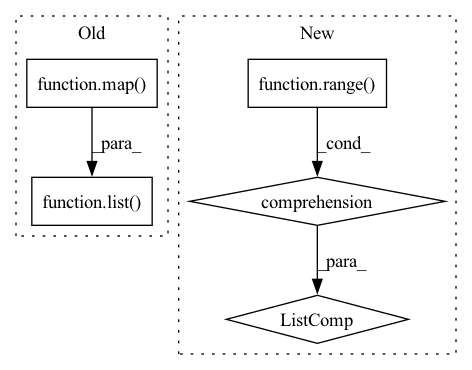

Pattern ID :39360
Before Change
// Look for files that end in "_sparse.npy" since this processing is
// only applied to sparse data.
input_files = list(
map(
lambda f: os.path.join(input_dir, f),
list(filter(lambda f: f.endswith("_sparse.npy"), os.listdir(input_dir))),
)
)
if not input_files:
raise ValueError(
f"There are no files that end with "_sparse.npy" in this directory: {input_dir}"
)After Change
// Look for files that end in "_sparse.npy" since this processing is
// only applied to sparse data.
input_files = [os.path.join(input_dir, f"day_{i}_sparse.npy") for i in range(DAYS)]
if not input_files:
raise ValueError(
f"There are no files that end with "_sparse.npy" in this directory: {input_dir}"In pattern: SUPERPATTERN
Frequency: 3
Non-data size: 5
Instances Fragment ID: 111665725
Project Name: facebookresearch/torchrec
Commit Name: e55a49c8dbb8a1ad7aed736120559013ce4f3fad
Time: 2022-08-29
Author: samiw1@fb.com
File Name: torchrec/datasets/scripts/contiguous_preproc_criteo.py
M Class Name: AnonimousClass
N Class Name: AnonimousClass
M Method Name: main(1)
N Method Name: main(1)
M Parent Class:
N Parent Class:
M File Name: torchrec/datasets/scripts/contiguous_preproc_criteo.py
N File Name: torchrec/datasets/scripts/contiguous_preproc_criteo.py
M Start Line: 59
M End Line: 69
N Start Line: 61
N End Line: 67
Before Change
scores = np.array([[l["score"] for l in output] for output in labels])
e_x = scores[:, 0] * -1 + scores[:, 1] * 0 + scores[:, 2] * 1
argmax = np.argmax(scores, axis=-1)
argmax = list(
map( lambda index: self.label_mapping[f"LABEL_{index}"], argmax.tolist())
)
e_x[e_x == 0] += eps
if not highlight:
updates = [After Change
]
max_scores = scores.values[np.argmax(scores.values, axis=-1)]
updates = [
{
"sentiment": idxmax[index],
"score": max_scores[index],
"overall_sentiment": e_x[index],
"highlight_chunk_": shap_documents[index],
}
for index in range(len(texts))
]
return updates
@property
def explainer(self): Fragment ID: 111665723
Project Name: relevanceai/relevanceai
Commit Name: c225defd0c9959aedb55ab759e97cc1c3493b0b7
Time: 2022-09-07
Author: joseph.twin@relevance.ai
File Name: relevanceai/operations_new/sentiment/transform.py
M Class Name: SentimentTransform
N Class Name: SentimentTransform
M Method Name: analyze_sentiment(7)
N Method Name: analyze_sentiment(7)
M Parent Class: TransformBase
N Parent Class: TransformBase
M File Name: relevanceai/operations_new/sentiment/transform.py
N File Name: relevanceai/operations_new/sentiment/transform.py
M Start Line: 108
M End Line: 146
N Start Line: 118
N End Line: 162
Before Change
// Get grid points
points = anp.meshgrid(*grid_1d)
self.points = anp.stack(
list( map( anp.ravel, points)) , axis=1, like=integration_domain
)
logger.info("Integration grid created.")After Change
)
)
self.h = anp.stack(
[grid_1d[dim][1] - grid_1d[dim][0] for dim in range(self._dim)] ,
like=integration_domain,
)
Fragment ID: 111665721
Project Name: esa/torchquad
Commit Name: 1ff2889e38ac59d0af372eb22797ee9dad666b8d
Time: 2022-03-14
Author: ga84muv@mytum.de
File Name: torchquad/integration/integration_grid.py
M Class Name: IntegrationGrid
N Class Name: IntegrationGrid
M Method Name: __init__(3)
N Method Name: __init__(3)
M Parent Class:
N Parent Class:
M File Name: torchquad/integration/integration_grid.py
N File Name: torchquad/integration/integration_grid.py
M Start Line: 27
M End Line: 72
N Start Line: 27
N End Line: 73